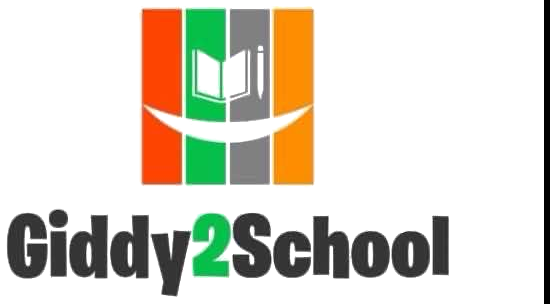
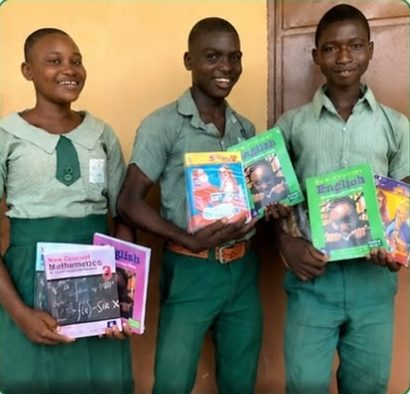
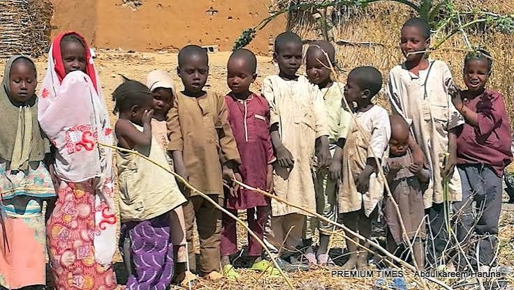
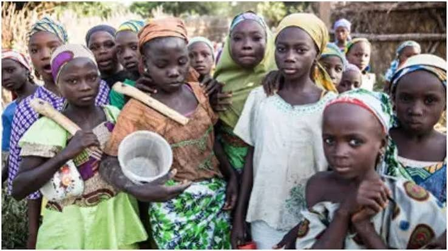
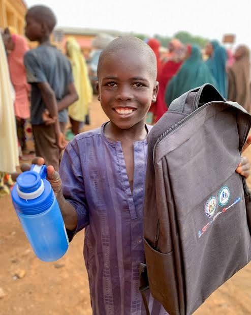
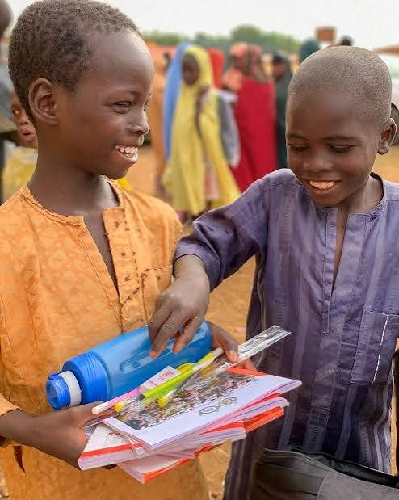
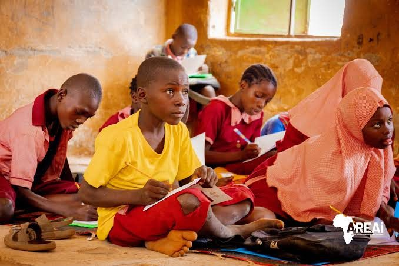
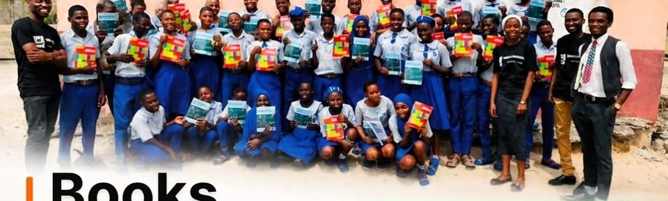

Literacy & Numeracy Club
Safe, lively learning spaces in partner schools. In 2025: 472 students across 10 schools in Nigeria and Uganda.

Education without walls
Giddy2School keeps children in school, builds useful skills for young people, and backs the next generation of leaders across Nigeria and Africa. This November, your gift can be matched.

The need
Not because they lack ability. Because access, fees, books and support are out of reach.
No one chooses where they are born. Where a child starts should never decide how far they go.
A bag. A notebook. A pen. Someone who shows up and cares.
Learning materials turn attendance into confidence, and confidence into progress.
Many classrooms have no desks, no library and too few books. That is the gap we exist to close.





Source: Giddy2School Annual Report 2025.
From our founder
Hear why this campaign matters, what your gift keeps going, and how five minutes of your time can reach five more people.
Donate todayThe match
Our fiscal sponsor, New Africa Fund, has confirmed that donations raised above $500 will be matched, up to $5,000.
If we reach the full $5,000 target, we receive another $5,000: $10,000 for education and skills. Any amount helps. Here is how we get there together:
Our work
We keep children in school with an integrated approach to reducing dropout and illiteracy, then connect learning to real opportunity.
Safe, lively learning spaces in partner schools. In 2025: 472 students across 10 schools in Nigeria and Uganda.
Leadership plus a technical track in web development, data analysis, design and writing. 322 applicants in 2025; 31 graduated.
Digital literacy, career development and entrepreneurship courses. 20 young people trained in 2025.
Fees, learning materials and support for children at risk of dropping out. 6 children supported in 2025.

Impact story · Badagry, Lagos
Badagry is a border community where most schools have no library. After our outreach, a student named Samuel ran out to tell us how special he and his classmates felt, and that no one cared, but we did.
This is Giddy2School. Our mission is to reach the unreached.
Unlock more opportunitiesTrust
Montessori Global STAR Endorsement and Lifelong Learning Award (2025). Featured in the HundrED Global Collection 2025.
Learners at the Wheels, our first academic paper, appeared in Taylor & Francis in 2025.
Fiscally sponsored by New Africa Fund. Pledges count only when payment is confirmed, every donor is thanked, and we report publicly on how funds are used.
Partners and supporters: New Africa Fund · Cisco Networking Academy · Alison · GlobalGiving · Catalyst Now · Queentrepreneur Women's Foundation · FORUFEDA · Tek Tribe · ABISC Study Centre · Canva via TechSoup
Ways to give
Giddy2School Education Initiative
6810797904 · Moniepoint MFB
Print it on fliers or show it at events. It opens the official donation page.
20.6 million children and youth in Nigeria are out of school. We keep children enrolled, bring others back, and build skills that turn learning into opportunity.
Matching is available during the November 1–30, 2026 campaign window, so gifts made now can go further.
Donations raised above $500 are matched up to $5,000 under terms confirmed by New Africa Fund. Pledges count only once payment is confirmed.
Every Donate button opens our official donation page. This website never collects or stores payment details.
Yes. Every confirmed donor receives a personal thank-you and updates on progress and use of funds.
Always. We protect the dignity and privacy of every child and publish stories and photos only with appropriate consent.